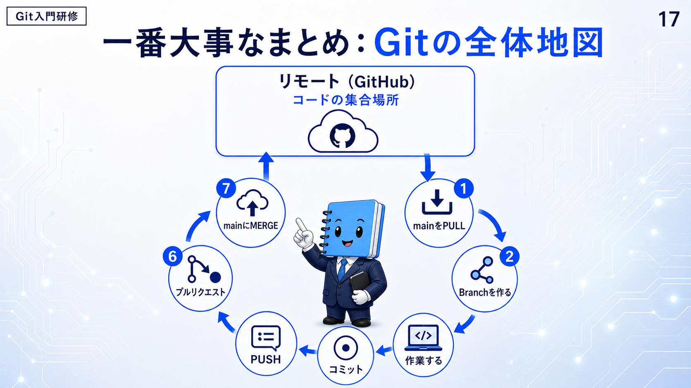

実際の開発フロー — 8つのステップ
資料が挙げるのは7つ。この学習ノートでは、そこに git add を1つ足して8つで数えている。
main の最新版を PULL
いちばん最初が取り込みであることに注意。古い状態から枝を切らないための一手。
新しいブランチを作る
03 の「下書きノートを作成」。
自分の作業をする
枝の中で書く。本線には触らない。
git addで待機場所へ登録する02 のステージング。編集したファイルのうち、履歴に残したいものだけを選んで登録する。資料には無い段。
コミットする
02 のセーブポイントを、区切りごとに置いていく。
PUSH する
手元の変更を、チームが見られる場所へ送る。ここではじめて手元を離れる。
プルリクエストを作る
「この枝を本線に入れたい」という申請。
確認して main にマージ
確認を経てから統合する。ここではじめて本線が動く。
8つのうち本線に触るのは最後の1つだけで、しかもその手前に「確認して」が挟まっている。02 で main を「確認された完成形を置く場所」と定義したことが、そのまま手順に落ちている。
並べ直すと、境目が2つ見えてくる。①〜⑤はすべて自分のパソコンの中——取り込み・枝・作業・登録・記録。⑥でようやく手元を離れ、⑧で本線が動く。
スライド16が挙げているのは7つで、git add は含まれていません。ただ、コミットの手前には必ず「何を記録するか選ぶ」段があるので、この学習ノートでは1つ足して8つで数えています。下の図版は資料のままなので、7つのカードで描かれています。
資料はこの順番の理由を明記していない。ただ 04 の説明と合わせて読むと、他の人が PUSH した変更を取り込んでから枝を切る、という並びになっている。
確認
この一連のステップのうち、本線が実際に書き換わるのはどの時点か。
- 待機場所に登録してコミットした時点
- 確認を経て統合する、いちばん最後の時点
- PUSH してチームが見られる場所に送った時点
答え: B — 手前の段はすべて枝と場所の話で、本線に触るのは最後の1つだけ。
しかもその直前に「確認して」が入っている。これが「main は絶対に壊れない」と言える理由になっている。
一番大事なまとめ：Git の全体地図
同じ流れを、場所つきで描き直したのがこの1枚。上にリモート（GitHub）＝ コードの集合場所があり、そこから出て、そこへ戻る円になっている。
main を PULL
リモートから下りてくる。
Branch を作る
ここから手元の作業。
作業する
git add待機場所へ登録する。資料には無い段。
コミット
PUSH
ここで手元を離れる。
プルリクエスト
main に MERGE
リモートへ戻り、次の周回の①になる。
始まりと終わりが同じ場所にあるので、この地図は一度きりの手順ではなく、回り続ける輪として読める。1周するたびに、リモートの main が1つ進む。輪の下半分——作業・登録・記録——は、まるごと自分のパソコンの中の出来事になっている。

確認
全体地図で、一連のステップの始点と終点はどこに置かれているか。
- どちらも手元のパソコンの中に置かれている
- 始点は手元、終点はチームのレビュー画面に置かれている
- どちらもリモート側に置かれていて、輪になっている
答え: C — 取り込みで始まり、統合で戻る。出発点と着地点が同じ場所にある。
だからこの図は一度きりの手順ではなく、繰り返される輪として読める。
結論：Git は安全に作成するためのコード保管庫
資料は最後に、01 の結論へ戻る。ただし一語増えている——安全に作成するためのコード保管庫。
変更を履歴として残し、いつでも確認・復元できます。
そして締めの一行。失敗を恐れず、安全にコードを書ける最強の味方です。ここまで出てきた枝も、確認も、8つの順番も、目的はすべてこの一行に集約されている。壊さないための仕組みではなく、壊すことを恐れずに手を動かすための仕組みだという読み方になる。